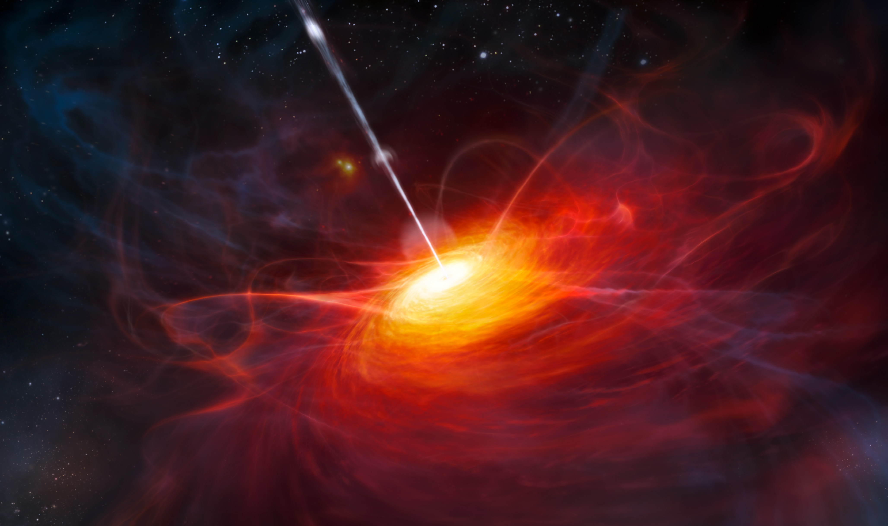

I’m an astrophysics PhD student studying at the University of Southampton.
My expertise relates to Monte Carlo radiative transfer techniques and how they can be applied
to astrophysical situations.
I am currently supervised by Professor Christian Knigge. The general principle of our work can be summed up by this XKCD-style plot.
You can find more details on my research, outreach and publications below,
and also read my CV here.
jm8g08 [at] soton [dot] ac [dot] uk
Dept. of Physics & Astronomy
University of Southampton
Southampton SO17 1BJ

Outflows are ubiquitous in accreting systems. I spend my PhD developing a Monte Carlo radiative transfer and photoionization code, and using it to synthesize spectra of accreting objects with associated outflows.
Searching for Exoplanets During Predicted Lensing Events
Microlensing events are transient brightenings in a background stars light, caused by the motion of a foreground graviational lens across it's line of sight. My masters thesis focused on predicting these events, so we could search for explanets with targeted, systematic monitoring programs
My public engagement work involves taking this huge inflatable planetarium into local schools. As you can tell I get pretty excited about this. I also enjoy giving public talks. These are normally about alien life as that is the most popular topic for kids, but I've also given more specialised talks on winds and tori around black holes. This session included donuts.
Testing Quasar Unification: Radiative Transfer in Clumpy Winds
2016
Matthews, J. H.; Knigge, C.; Long, K. S.; Sim, S. A.; Higginbottom, N.. Mangham, S. W.
MNRAS,
DOI: 10.1093/mnras/stw323
The impact of accretion disc winds on the optical spectra of cataclysmic variables
2015
Matthews, J. H.; Knigge, C.; Long, K. S.; Sim, S. A.; Higginbottom, N.
MNRAS,
450,
3.
The Optical–UV Emissivity of Quasars: Dependence on Black Hole Mass and Radio Loudness
2016
Shankar, F.; Calderone, G.; Knigge, C.; Matthews, J. H.; et al.
MNRAS,
818,
1.
Line-driven Disk Winds in Active Galactic Nuclei: The Critical Importance of Ionization and Radiative Transfer
2014
Higginbottom, Nick; Proga, Daniel; Knigge, Christian; Long, Knox S.; Matthews, James H.; Sim, Stuart A.
The Astrophysical Journal,
789,
1,
A simple disc wind model for broad absorption line quasars
2013
Higginbottom, Nick; Knigge, Christian; Long, Knox S.; Sim, Stuart A.; Matthews, James H.
MNRAS,
436,
2,
Nearby planetary systems as lenses during predicted close passges to background stars.
2013
Di Stefano, Rosanne; Matthews, James; Lépine, Sébastien
ApJ,
779,
2,
Modelling the Spectra of Quasars: Clumpy Winds and Unification
September 2015
TORUS 2015, Winchester, UK
Disc Winds Matter! Their impact on the optical spectra of cataclysmic variables
September 2015
The Golden Age of Cataclysmic Variables, Palermo, Italy
Modelling the Spectra of Quasars: Clumpy Winds and X-ray Properties
June 2015
The Extremes of Black Hole Accretion, Madrid, Spain
Modelling the Spectra of Quasars: Clumpy Winds and X-ray Properties
June 2015
Black Hole Accretion and AGN Feedback, Shanghai, China
Public Talk- The Search For Alien Life
2015
Stargazing Live on campus event, University of Southampton
Modelling the Spectra of Quasars
June 2014
Accretion Disc Winds Meeting, Durham, UK
The Impact of Disc winds on the optical spectra of Cataclysmic Variables
2012
Cataclysmic Variables Meeting, Columbia University, New York
Searching for Nearby Planets During Predicted Mesolensing Events
2012
Exoplanet Lunch, Harvard CfA, USA
Systematic Exoplanet Searches During Predicted Mesolensing Events [POSTER]
2012
American Astronomical Society, AAS Meeting
{kind=link}
{kind=link}